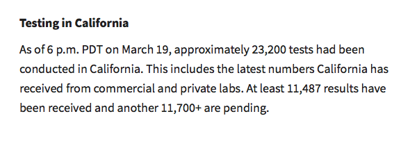
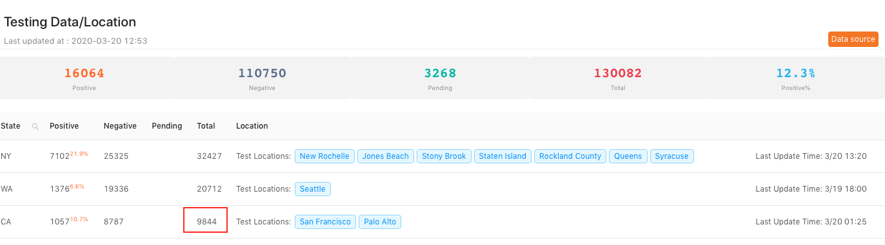

Issue with testing data from CA
Issue number 28
dkondras opened this issue on March 20, 2020 at 3:03 pm
It is taken from CDC site and incomplete.
Better source is daily news release by CA department of public health that provides update for previous day at 6pm PCT, and includes testing results from private labs in addition to CDC. https://www.cdph.ca.gov/Programs/CID/DCDC/Pages/Immunization/nCOV2019.aspx.
For example as of the time of writing, the total tests for CA is 9844, while CADPH “Latest COVID-19 Facts 3-20” news release gives
“As of 6 p.m. PDT on March 19, approximately 23,200 tests had been conducted in California. This includes the latest numbers California has received from commercial and private labs. At least 11,487 results have been received and another 11,700+ are pending.”
 
Thanks.
Comments
Got it, thanks!
Thanks @dkondras! California’s data has been very tricky for us to report accurately.
Please read the notes we’ve written at https://covidtracking.com/data/state/california and let us know if you have any further questions: